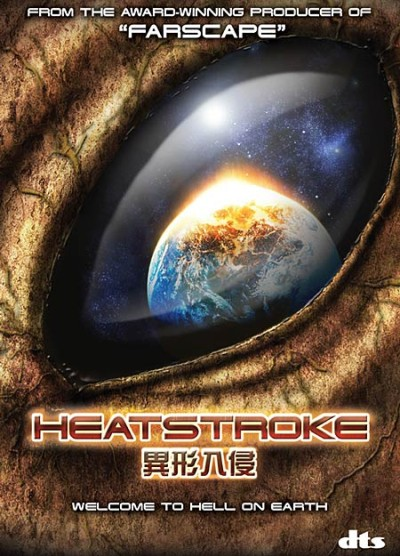

Название: Мисс Март
Ориг. название: Miss March
Жанр: Комедия Год: 2009 Страна: США, The Jacobson Company
Режиссёр: Зэк Креггер, Тревор Мур Сценарист: -
В ролях: Зэк Креггер, Тревор Мур, Рэкуэл Алесси, Молли Стэнтон, Крэйг Робинсон, Хью М. Хефнер, Карла Хименез, Седрик Ярброу, Джофф Мид, Слэйд Пирс
Описание
Фильм рассказывает историю молодого человека, который пробуждается от четырехлетней комы и узнает, что его девственно чистая школьная возлюбленная красуется на обложке мужского журнала. Он и его друг приняли решение участвовать в гонках на выживание в легендарном особняке штаб-квартиры журнала, чтобы отыграть девушку обратно.

Название: Тепловой удар
Ориг. название: Heat Stroke
Жанр: фантастика, ужасы Год: 2008 Страна: США, Tumidor, Rigel Entertainment
Режиссёр: Эндрю Проуз / Andrew Prowse Сценарист: -
В ролях: Д.Б. Суини, Дэника МакКеллар, Крис Кливлэнд, Келли Райс, Zac Heileson, Parker Benton, Франческа Буллер, Шарлотта Диас, Kimberly Nault, Джессика Уорфилд
Описание
Инопланетяне пытаются изменить температурный режим атмосферы Земли, разогрев ее до комфортного для них уровня. Это явление ускоряет необратимые процессы глобального потепления, планете грозит смертельное разрушение. У майора спецназа О`Баннона и его команды есть только один тщательно разработанный план и три часа, чтобы остановить пришельцев, одно неверное решение и Земля прекратит свое существование…
Название: Чумной город / Plague Town
Год выхода: 2008
Жанр: Ужасы
Режиссёр: Дэвид Грегори
Актёры: Джослин Декроста, Эрика Родс, Дэвид Ломбард, Линдсэй Горансон, Катрин МакМорроу, Элизабет Бове, Хоуп Александр
Описание
В отдаленной деревне страшная тайна окружает каждого живущего и рождение каждого ребенка. Она гласит, что все дети — создания Бога. Но не здесь... Для группы заблудившихся туристов любое понятие семьи скоро будет разбито на кусочки. А надежду немногих обреченных попасть домой окружает всепоглощающий ужас.
Сайт разработали и опубликовали:
Студенты Факультета МЭОиМ
группы № 716
Митин Евгений
Мельник Руслан